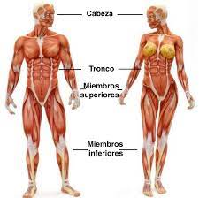
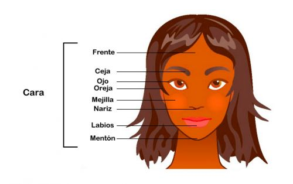
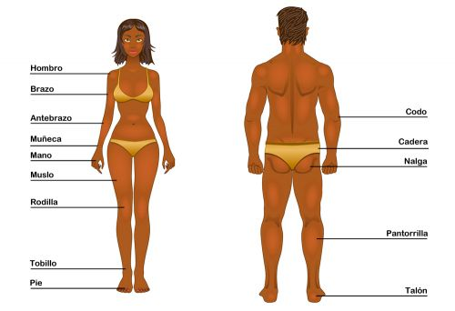
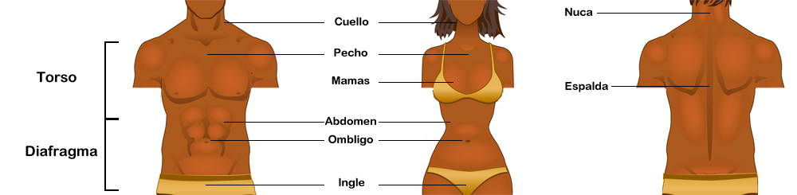

EL CUERPO HUMANO
¿QUE ES EL CUERPO HUMANO?

El cuerpo humano es el conjunto de la estructura física y de órganos que forman al ser humano. El término cuerpo humano se origina del latín corpus, que significa “cuerpo” y humanus, humanum que se refiere a “humano”.
La estructura física está compuesta por tres partes principales que son cabeza, tronco y extremidades superiores e inferiores y, la estructura referida a los órganos está compuesta por diferentes sistemas: circulatorio, respiratorio, digestivo, endocrino, reproductor, excretor, nervioso, locomotor.

El cuerpo humano se conforma en tres partes: cabeza, tronco y extremidades. El cuello sirve de unión entre la cabeza y el tronco
PARTES DEL CUERPO HUMANO

- Cabeza: está formada por el cráneo y la cara, contiene los órganos de los sentidos,
entre ellos el ojo y el oído. Dentro del cráneo se encuentra el encéfalo.
entre ellos el ojo y el oído. Dentro del cráneo se encuentra el encéfalo.

- Extremidades. Son cuatro, dos inferiores y dos superiores.
La extremidad superior se divide en brazo, antebrazo y mano. La extremidad inferior se divide en muslo, pierna y pie.
